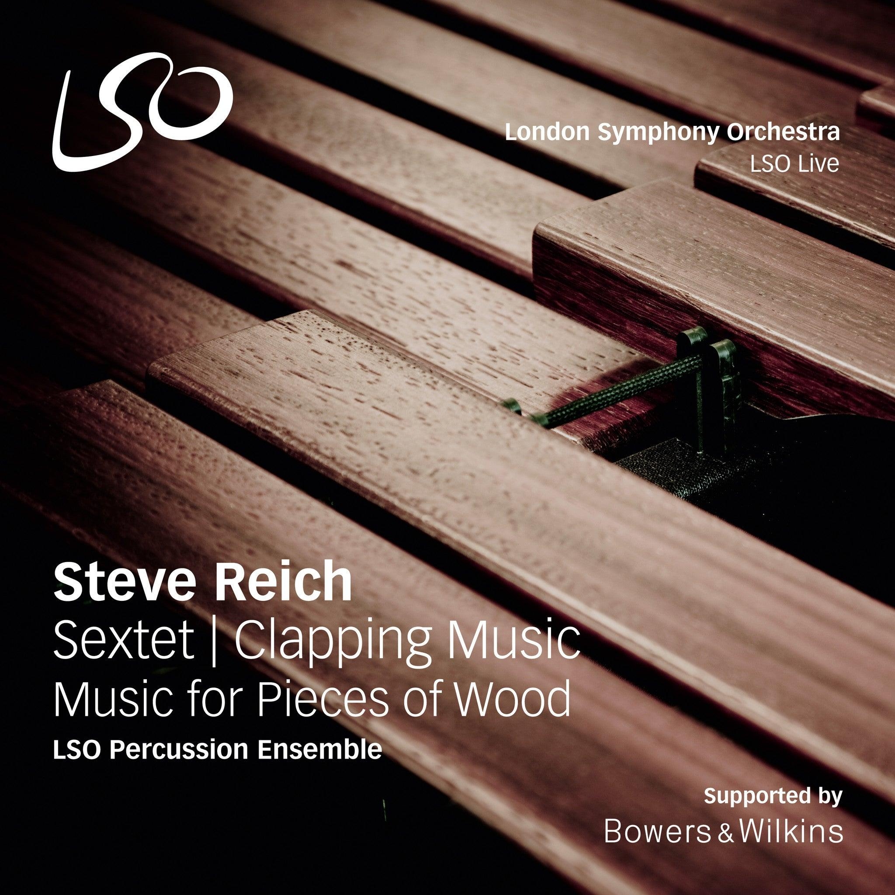

Rhythm is one of the most important features of minimalist music. Minimalist composers often use short rhythmic patterns that are repeated continuously. These patterns may gradually change through processes such as phase shifting, addition, or subtraction. A steady pulse is usually maintained throughout the music, helping to create a hypnotic and driving effect. Although the rhythms themselves are often simple, the interaction between different patterns can create complex and interesting textures.
Example:
A minimalist piece may repeat a short rhythmic pattern for several minutes while introducing small changes that gradually transform the music over time.